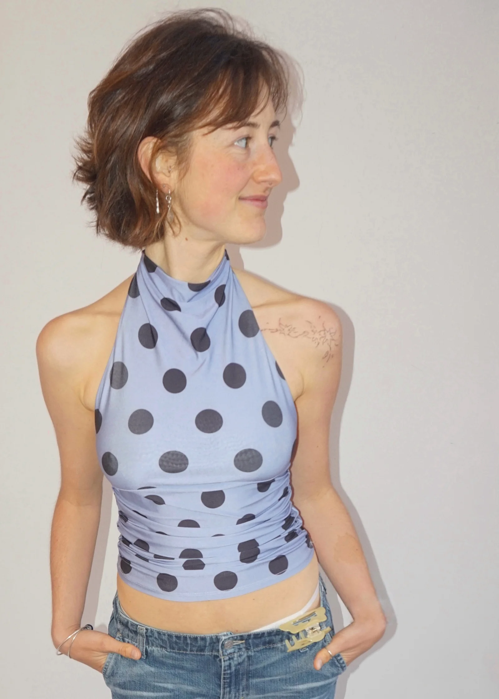

Hallihallo, ich bin Fiona.
Als Kommunikationsdesignerin mit einer Leidenschaft für Illustrationen
erschaffe ich visuelle Welten, die Geschichten erzählen und Marken eine eigene und
unverwechselbare Stimme geben.
Ich kombiniere präzises Grafikdesign mit persönlichen Illustrationen. Für Agenturen entwickle ich
Key-Visuals, individuelle und ganzheitliche Brandings mit illustrativem Charme für Freelancer:innen.
Mein Ziel bleibt es, Komplexität clever darzustellen und nahbar zu machen.
Lust die Würfel nochmal neu zu werfen?
Ich biete mehr als nur sechs Seiten.